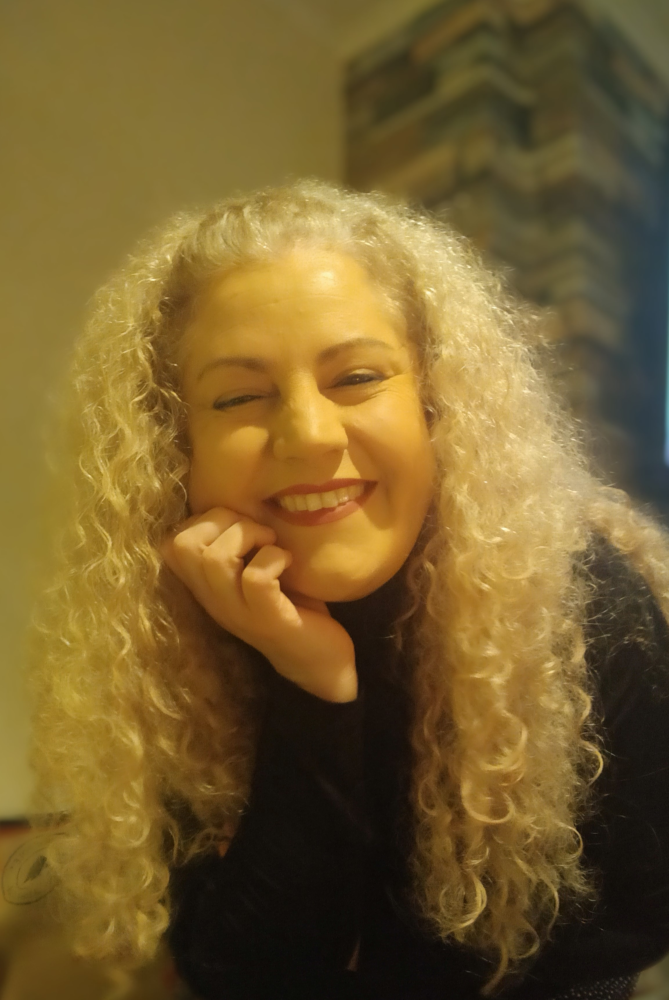
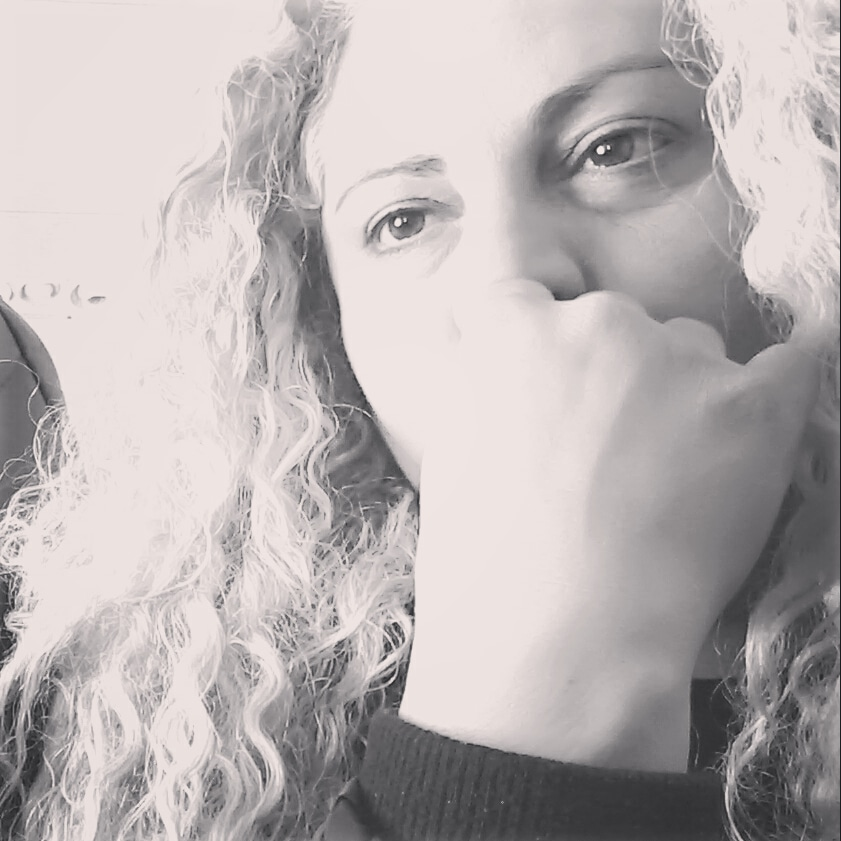
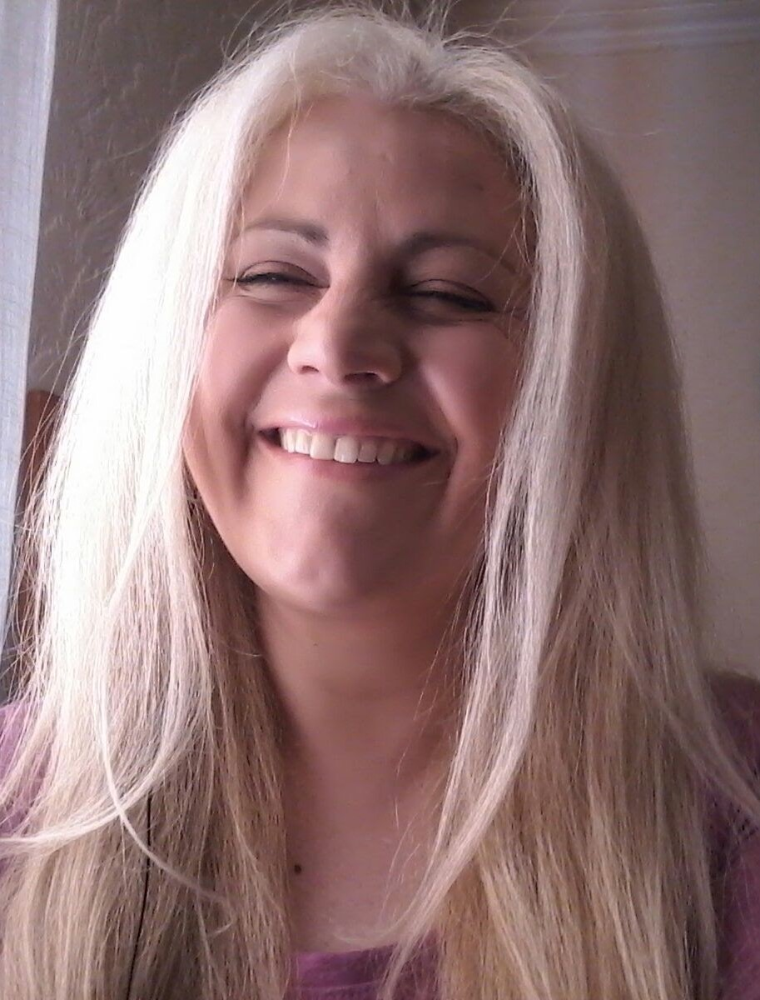

Hi, my name is Ana. I am going to tell you the steps I use to get my curly hair just the way I want it.
The first thing I do is wash my hair with a regular shampoo to remove grease and any leftover product residue from my hair. Then, for the second wash, I use a repairing treatment shampoo that also helps to smooth the hair. I use brands like Pantene, SheaMoisture, or Cantu.However, it's important to keep in mind that washing your hair excessively or using very strong products can strip away the natural oils from your scalp and cause long-term damage.

Brushing my curly hair requires a gentle and careful approach to avoid causing frizz or damaging the natural curl pattern.I use a wide-toothed comb or a brush specifically designed for curly hair and my hair is always wet when I brush it.

I have choosed a microfiber towel because in my case, regular bath towels can be rough on the hair and cause frizz. Using a microfiber towel or a soft t-shirt is gentler and helps to minimize damage.Then, gently I squeeze out excess water from my hair, Try to avoid rubbing your hair vigorously with the towel, as this can lead to frizz and breakage.
Is time to apply the leave-in conditioner to make the process smoother and reduce tangles, with my fingers to detangle my hair initially. This can help you identify and gently remove knots without causing damage. There are a lot of brands, I use SheaMoisture.
Apply the curly cream: Starting with one section of my hair and apply the curly cream from the roots to the ends. Then, I define my curls and after I use my fingers to gently scrunch and define my curls. I also twist individual curls to enhance their shape. Repeat it on each section. I use Cantu
I dry each section with the diffuser until my entire head is dry. I always scrunch and lift the hair at the roots to maintain volume and curl definition.Once my hair is mostly dry, I can switch my hairdryer to the cool shot setting and use it briefly to set the curls and reduce any remaining frizz.Finally,I apply a small amount of hair oil or serum to seal in moisture and add shine to my curls. I don't really care about the brand of my hair diffuser, now I am using Revlon.

Your hair color is unique to you and can vary depending on factors such as genetics, ethnicity, and age, so in my case, I use 9.0 plus a litle bit of 9.1 because my hair most of time has golden highlights. Sometimes I use Wella, Fanola or Garnier. Sometimes I like to change my look so I go to the hairdresser and my hair straight is my favourite option, as you can have a look on my photo.